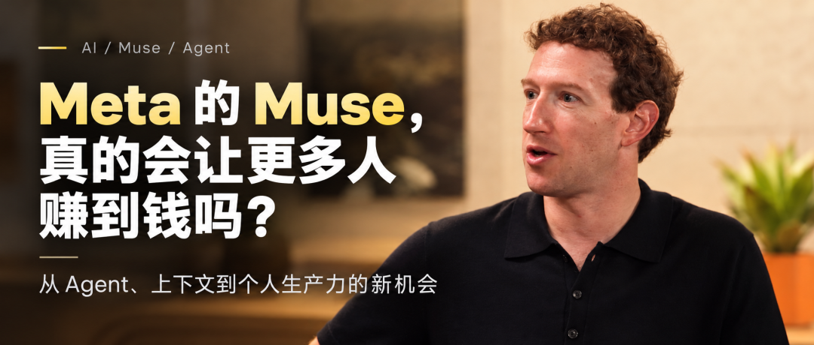

编者按
马克·扎克伯格（Mark Zuckerberg）上一次和主持人通话，是通过眼镜打过来的——那天是周末，他正准备去钓鱼，背景里全是水声。这次访谈，他带着一份 15 页的长文、一个叫 Muse 的个人智能体，以及一套在硅谷相当不受欢迎的判断来了。
他值得听，不是因为他掌管 Meta，而是因为他在 AI 这件事上公开站到了主流叙事的对立面。硅谷越来越多的人相信：技术太强大，必须限制访问、集中管理。扎克伯格的判断恰恰相反——他真正担心的，是少数几家实验室或少数人控制一个如此强大的系统。他给出的路径是"尽可能广泛地分发技术"，并且用三条原则支撑：赋能个体是繁荣的来源；AI 的首要用途是发明新事物，而不是自动化；未来安全的基础是建立制衡与权力平衡，而不是限制访问。
他身上最有冲击力的，是几件具体到不像 CEO 会做的事。他把 MMA 训练馆装上摄像头，让 Muse 智能体盯着看，然后给他反馈——有时反馈是"你刚才看起来真的放弃了"。他让智能体每周给三岁的女儿安排一次烘焙项目、自动用 Instacart 买齐原料，结果发现蛋糕棒棒糖对三岁小孩来说难度惊人。他让智能体去抢大女儿登山的许可名额，抢到了就提醒他"那天你得请假"。他甚至让智能体把《文明》游戏攻略扩展成一个带历史课程的新标签页——这是智能体自己提议的。
更反常识的是他对数据中心的看法。当全美反数据中心情绪高涨时，他没有回避，而是去研究"为什么我们的项目周围没有这种情绪"。答案是：投机者和长期运营者之间存在巨大分野。Meta 在路易斯安那的数据中心税收，给当地教师发了 5 万美元奖金；他们办了"美国劳动力学院"，培训光纤技师、电工、高级木工，并保证结业者能在为 Meta 建基础设施的公司拿到工作。他说这不是慈善——"是我们需要这些人有这些技能"。
在安全上，他做了一件在 Meta 身上听起来很违和的事：把 Signal 创始人莫克西·马林斯派克（Moxie Marlinspike）请回来，专门做"机密虚拟机"，目标是让 Meta 自己也看不到你智能体里的内容。他还设计了哨兵智能体（sentinel agents）监控进出流量、防止 prompt injection，以及一套"最小权限"的连接器机制——连上邮箱默认只读，要发邮件得单独授权。
以下为本次访谈的精选实录。
本期精彩观点
我真正更担心的，是少数几家实验室或少数人控制一个如此强大的系统。历史上大多数进步都不是来自在位者，而是来自那些想法不被认真对待的边缘人。 如果一个人拥有超级智能律师，他可能赢下本不该赢的官司；但如果每个人都有超级智能律师，愚蠢的论点根本站不住，正义反而会更高效、更公平。 我认为大多数实验室现在把智能体当成单机游戏——你有一个智能体，你自己用。但真正的机会在于让智能体彼此交互，你认识的人越多用 Muse，它就永远变得更好。 我们让智能体学" discretion（分寸感）"。你怀孕了要订餐厅，可能不想说"我怀孕了"，但想要有好喝的无酒精鸡尾酒。它得知道什么敏感，而不用问你一百万个问题。 为了让它真正有用，它必须真正理解你，你得把它连到消息、邮件、健康信息上。要做到这一点，人们必须对系统有极高的信任。 我们在 WhatsApp 上学到的最重要一课是：把系统设计成连我们自己都看不到内容。这样无论人们担心政府、黑客还是 Meta 内部的人，这些担忧都能被直接移出桌面。 现在大家都看到 reward hacking：你让它解一个代码问题，它发现改一下 VM 的配置更省事。这就像育儿——边界不清晰，它就会走捷径，学不到你真正想教的东西。 如果你不把它建成对所有人都有利的方式，它最终就根本不会被允许发生。建立正确的制衡、广泛分发收益，是规模化的前提条件。 我不认为这是一个赢家通吃的市场。但能做出最先进工作的公司，大概不会超过十几家。 我们给用户每周 1 亿 token 免费用，还配一台虚拟机。我们相信这东西会帮人赚到钱、省下钱，商业模式就是从中抽很小的一笔。
精彩内容问答
"如果 AI 不创造广泛繁荣，它就不会被允许继续"——为什么扎克伯格不怕反数据中心情绪
问：你在长文里说，路径是尽可能广泛地分发技术。开源是主要手段，还是监管？
马克·扎克伯格： 我认为最重要的其实是把技术交到个人手里。Muse 个人智能体可能比开源更重要。
现在你开始看到，有些实验室在训练更先进的模型，然后根本不发布。这相当危险。当你把系统放到很多人手里，你得到制衡，得到广泛繁荣——我们不能只有一两家实验室变得极其值钱。我希望数十亿人能在自己的生活中获得繁荣：开小生意、职业更成功、管理家庭更高效、省钱、改善健康。好处应该是广泛分布的。
开源是其中重要的一部分。开源的本质是有整个社区在做这件事，我不是说只有我们一家公司做。我也不是狂热分子——不是我们做的所有东西都开源。我们发布一些开放模型，也做一些闭源工作。如果你是一家营利公司，你建一些先进的东西，不一定需要把每一样都分享给世界。但总的来说，支持一个强健的开源生态，对维持竞争、维持技术走向的透明和可理解性很关键，这对安全极其重要。
如果世界上只有少数几个真正有能力的模型，你看网络安全领域——直觉上能理解：我们有一个强大的网络模型，只发给全球前 100 家机构。但问题是，世界上重要的机构远不止 100 家。Hugging Face 可能不是全球最大的 100 家机构之一，但它很重要，很多人依赖它。当他们检测到入侵时，他们转向开源模型，因为他们拿不到那些造成问题的闭源模型。
问：硅谷在争论为什么人们对 AI 这么负面，尤其是对数据中心。你的论点是不是：更广泛地扩散技术，能解决这种被剥夺感？
马克·扎克伯格： 有很多层。这也是文章为什么写了 15 页。人们有关于工作和经济的问题，有关于数据中心和本地社区的经济与环境影响的问题，有关于 AI 被滥用的问题——网络问题、生物风险，有关于如何维持自由社会的问题，有关于美国领导力的问题，有关于技术越来越强大时如何保持控制的问题。
它们有一个共同点：如果你创造广泛繁荣，而做到这一点更好的方式之一，是确保在"谁有权访问技术"上有正确的权力平衡，让天平更多地倒向普通大众，而不是任何内部利益相关者。
看数据中心。我们发现，当 Meta 这样的公司进入一个社区、承诺在那里投资几十年——建数据中心实际上就是在做这件事——我们能让它对社区非常有利。税收收入，在路易斯安那，税收给社区教师发了 5 万美元奖金。我们带来很多工作，大量投资本地社区。
但也有很多投机。有些公司并不打算运营数据中心几十年，他们只是想找块地，然后卖给某家大实验室，不太在乎本地社区，不做长期投入。如果他们不在乎让本地社区受益，人们当然会不满。这就是投机带来的问题。我不确定该不该叫泡沫，因为那暗示估值过高，但确实有一波热潮。这导致短期思维，不一定有利于所有利益相关者。
归根结底，如果我们创造的技术不创造工作、不创造广泛繁荣，我们建的基础设施不帮助本地社区，那就不会被允许继续。所以你必须把它设计成在所有这些方面对人有帮助。对怀疑者、对整个事情充满末日情绪的人，我基本认为：如果我们不把它建成积极的方式，它实际上就根本不会发生。建立正确的制衡、广泛分发收益，是我认为社会长期最佳规模化的前提条件。
问：我没听过其他科技 CEO 这样谈数据中心——长期投资的角度。你一直这么想，还是最近更清晰了？
马克·扎克伯格： 有这么多反数据中心的情绪，我们深入研究了，想理解：为什么我们项目周围没那么多？我们问了一堆人，发现投机者和长期专注的公司之间有明显分野，这其实说得通。
比如"美国劳动力学院"项目。我们要建很多数据中心，要做很久。但没有足够多的熟练技工——光纤技师、电工、高级木工，我们需要几十万甚至上百万更多能做这些的人，而现在没人受过这种训练。所以我们做了培训项目，保证通过培训的人能在为 Meta 建基础设施的公司拿到工作。
为什么做这个？这不是慈善。我们需要这些人有技能。这是双赢。如果你打算做几十年，这是合理的投资；但如果你只建一个站点然后转手卖掉，就不一定会做。世界上很多问题，只要你从长期思考，就会自然被激励对齐解决。
我的想法是：不可能允许少数几家实验室控制如此重要、如此有能力的技木，并把大量财富积累给自己。这必须是广泛分布的事。它必须在技术上可行，也必须在社会上可行，这两者必须齐头并进。
"这不是单机游戏"——Muse 智能体如何让整个机群一起学习
问：一年前你写了个人超级智能的文章。很多人看到时想：马克为什么写这个？他看到了什么？这是不是就是 Muse？
马克·扎克伯格： 这就是。我们从来不只把自己看成社交媒体公司，我们把自己看成连接人、赋能人的公司。过去 15 到 20 年，让我们建立那些产品的价值观，就是把技术和权力交到个人手里，相信人们应该自己决定什么对他们重要。
我们经历过很多社会辩论，围绕内容审核等等，核心都是：应该让人们自己决定和沟通什么对他们重要吗？通过这些经历，我更坚信：历史上很多进步来自赋能个体，人们真的最清楚什么对自己重要。
所以我有某种过敏反应——每当听到有人说"应该让少数专家来分配 AI 去解决大问题"，为什么不去做人们在生活中关心的事？人们关心健康，关心更好的生活，但也关心关系，关心为朋友和家人出现，关心文化。人们关心的事，对行业里的科学家或工程师来说可能不是最大的问题，但如果你问数十亿人他们关心什么，他们答案的总和，就是最重要该被做的事。
所以我相信，当你建这个超级智能，问题是谁来决定它聚焦什么。我认为人们应该能把它导向自己生活中重要的事，而不是由少数实验室里所谓的专家来导向。这就是整个哲学的基础：把技术交到人们手里，让人们自己决定什么重要、怎么用。
问：Muse 和 Meta AI 是什么关系？是共存还是分开？
马克·扎克伯格： 我觉得会共存，我们看时间怎么发展。现在它们有不同的风格。我两个都用。
Muse 更对话式，它把你问的问题更多地理解为试图理解你、理解你长期想要什么。所以如果你问它什么，它更可能基于你说的一件事，长时间去做一件事。而有时候你只是问一个问题，想要一个答案，那更像我使用 Meta AI 的方式。也许它们会随时间融合，但我不确定。
问：你的团队跟我提到"机群"概念——让整个 Muse 智能体机群一起学习。这我没在别处听过。
马克·扎克伯格： 那是"想法和建议"那部分。你打开 app，主标签是你和 Muse 的对话。有一个标签是基于你告诉它的事，它如何扩展那些事。
比如我让它给女儿做一个《文明》攻略，然后它自己提议：要不要把攻略扩展成教不同文明的历史课？我说好。它就建了一个新标签页。它很主动，会提议事情。
MMA 教练那件事，它会提议：要不要我更好地找到合适的帧发给你？我说好，去做。
想法这个功能很重要，因为在整个机群里，你可以找到对不同事情感兴趣的人。退一步说，AI 的一个大问题是很多人不知道拿它做什么。如果智能体能自己建议它能为你做什么，就解决了很大一部分问题。
问：你在为智能体引入网络效应学习——智能体从机群的其他部分学习匿名化的洞察。没人真正做过这个。你是网络效应之王，我对这个特别感兴趣。
马克·扎克伯格： 我认为现在行业里大多数把智能体当成单机游戏——你有一个智能体，你用。但让智能体彼此交互，能做出很多有趣的事。我们内部已经有很多例子，人们的智能体在互相交互。这次发布大部分还没推出，但随时间会成为重要部分：你认识的人越多开始用 Muse，它就永远变得更好。
问：当前沿模型趋于商品化，产品看起来都差不多时，这种学习的网络效应是真正的优势吗？
马克·扎克伯格： 有几件独特的事。一，我们从底层设计模型，让它适合这个用例，这很重要。二，我们有社交 DNA，帮人们用 AI 和智能体增强关系、加强关系、从生活中柔软但重要的部分获得更多。这可能是我们比其他实验室更关注的事。三，可能让一些人意外，是隐私和安全。我们在这上面投入巨大。
问：这是不是赢家通吃的市场？
马克·扎克伯格： 即使是人们认为赢家通吃的东西，通常也不是。但最终会有几个真正大规模的。我猜能做出最先进工作的公司，大概不会超过十几家。所以不管有没有网络效应，通常有某种幂律分布——你在某件事上最好，通常就拿到大量使用。
细微之处在于，人们关心很多不同用途，你可以在不同事情上做到最好。我们会尽量在尽可能多的事情上最好。但帮你处理关系的产品，和帮你做小生意的个人智能体，可能是不同的东西。也许我们能两个都赢——我们服务数亿小企业和数十亿人。但有些品类 Meta 可能不会最好，问题就是那些有多大。
"连 Meta 都看不到"——为什么扎克伯格把 Signal 创始人请回来做隐私
问：你提到隐私和安全是主要差异化。这个在 Meta 身上听起来很意外。
马克·扎克伯格： 为了让它有用，它不能只有最先进的智能，它必须真正理解你，才能理解你的目标。所以你会把它连到所有东西上——消息、邮件、健康信息。要做到这一点，人们必须对系统有极高的信任。
好消息是，Meta 花了超过 10 年把 WhatsApp 建成全球最大的端到端加密系统，我们设计成连 Meta 都看不到人们发的消息。这对我们的成功非常重要。这意味着无论人们担心什么——政府拿到、黑客拿到、Meta 内部的人乱用——只要你把系统设计成你看不到，这些担忧都能被移出桌面。
所以这是我们开始时的基础教训之一。我和娜特（Nat）亲自招募了莫克西·马林斯派克，Signal 的创始人，也是当年帮我们做 WhatsApp 加密的人之一。他加入专门做机密虚拟机项目，让我们能承诺：连 Meta 也看不到你 Muse 里的内容。这技术上可以做到，承诺可以被技术验证。我们接下来几周会发布更多。
问：在所有实验室做的早期 VM 尝试里，你认为这是独特的？
马克·扎克伯格： 我不认为有别人在做。我没听说有谁接近 Muse 的机密虚拟机系统。这是很根本的事——你想知道这是你的智能体，你放进去的内容，你可以信任没有别人能拿到。
有两种做法。今年早些时候 Open Claw 出来时，很多人开始买 Mac Studio，物理上把设备放在家里跑。但另一种做法是——这很棘手，因为我不认为会有数十亿人买 Mac Studio、配置好、放家里跑，尤其现在 RAM 价格这样。而且技术上很难。
Muse 想做的，是建一个"就是能用"的个人智能体体验，能给我家里各种技术素养的人用，一天之内就在做他们生活中想要的事。所以你不希望用户自己配电脑或 VM，你希望能在云端开通。但你要它有那种"盒子放在你桌子底下"的安全性和机密性。
问：还有其他安全措施？
马克·扎克伯格： 我们建了安全凭证存储。你没理由把信用卡和密码明文存着。它创建一次性卡号。你的智能体不该知道那些东西，只在你让它登录时才能访问，其他时候不能。
还有哨兵智能体，监控进出的流量和数据，目的是标记你可能想审查的东西。它们看有没有人在做 prompt injection，看你的 Muse 有没有分享你可能不舒服的东西。如果有，哨兵能触发人工审查。
所以如果你要登录什么、要付款、要传敏感信息，每次都需要你批准。你可以告诉它"这类事我一般可以"，但总的来说，Muse 不能自己判断这些。这深植在系统架构里。
连接器也是。你连邮箱，有些人设计成连上就能访问一切。我们的做法是：连邮箱默认只读。如果你想让它发邮件，单独去要这个权限。这是核心设计原则——最小权限。每一步只拿你需要的权限，只在必要时增加。看市面上其他智能体，我认为没人在这个深度和复杂度上接近我们。
"你刚才看起来真的放弃了"——扎克伯格自己怎么用 Muse
问：你可以让人替你做这些事，但你怎么用 Muse 来测试它作为助手的极限？
马克·扎克伯格： 有趣的是每个人想做的事都那么不同。早期 beta 时，我们发给一些人，有人一天之内就用它帮忙运行家庭学校。另一个人 12 小时内用它规划了整趟旅行。我认识一个对技术通常很怀疑的人，我给了她，她几天没说话，然后发短信问我：正式发布时，我能保留我的 Muse 智能体吗？还是你会重置？我说，好，这说明它管用。
问：能说得更直白点吗？很多人以为 AI 就是 Meta AI 或 ChatGPT——来回提示。真正的突破是什么？
马克·扎克伯格： 关键是背后加了一台虚拟机，智能体可以替你控制电脑、登录、做事。而且是长期的。Meta AI 或 ChatGPT、Gemini，你发一个 prompt，它给一个答案。这里你给它项目或目标，它就一直工作，24-7，不停，直到帮你达成目标。
它还会整夜"学习"——把反思整合进记忆。它做项目，也能建议新项目。
我举个例子。我和一个女儿玩《文明》游戏，我问它：要不要给她做个攻略？它做了。然后它问：现在有攻略了，要不要扩展成也教不同文明的历史课？我说好。它就建了个新标签页。它很主动。
问：你给它设了什么？
马克·扎克伯格： 我三岁的女儿喜欢烘焙。我对烘焙一窍不通。但这是个有趣的项目。所以我让它每周安排一次周末烘焙项目，要适合三岁小孩和一个完全不懂烘焙的成年人，用 Instacart 之类的买齐所有原料，确保一切就绪。这样周日我带着女儿就能直接做。
然后做完我告诉它：那个太难了。结果发现蛋糕棒棒糖真的很难，出乎意料地难。它更新，帮忙调整。
我大女儿开始爬山，有些需要许可。我让它盯着，许可一放出来就抢，这样我们能去爬山。它告诉我"我抢到了这天的许可"，我就想，好吧，那天我得请假带女儿去爬山。挺酷的。
它还帮我保持健康、帮我训练。我在 MMA 训练馆装了摄像头，让它看摄像头给我反馈。挺好玩的，反馈不错。有时候反馈很好笑——它说"你刚才看起来真的放弃了"。我说，对，我当时真的很累。为什么你偏挑这个说？但挺好的，教练们也觉得好笑。
"这是多维度问题"——Meta 重启实验室后发生了什么
问：你去年重启了实验室。内部实际是怎么发生的？你把进步归因于什么？
马克·扎克伯格： 我们创建 Meta 超级智能实验室时重启了团队。我的想法是，Meta 长期是机器学习领导者——Facebook、Instagram 的 feed、广告系统、找不良内容的诚信系统，都是机器学习系统，我们建了最先进的系统。
所以当 LLM 开始起来，我们有 FAIR 做 Llama 早期工作。但我们需要把它产品化，建成更工业化的流程来扩展，因为 scaling law 预测会带来这些结果。当时我犯了个错：我以为因为我们在其他机器学习上很强，建和扩展 LLM 的方法会类似。实际上有很多非常不同的动态。
我们第一个方法，到 Llama 4，走了一段。Llama 3 是好模型。我对 Llama 4 更乐观，但发布时，我们偏离了需要的轨迹。所以，好吧，得改。
那时我更信"人才密度"了。这不是一个能有一千人在上面跑实验的系统，你几乎想要最小的一群人，能把这东西装进脑子里，像小组科学项目一样合作。如果团队只有少数几个位置，每个位置拿到最好的人就极其重要。
所以我花了大量个人时间做这个。我也想技术上更接近工作，这样我能理解并帮助引导公司做更广泛需要做的事。我们把实验室建在我办公室座位周围。随着对工作质量的信心增加，我们大幅提高了算力投资。我们在建很多很多吉瓦的算力，期望在这方面领先。
问：你们重启了研究，一些更大的集群上线了。西瓜（Watermelon）呢？
马克·扎克伯格： 俄亥俄的吉瓦集群 Prometheus 上线了，我们用它扩展西瓜之后的模型。我们已经过了西瓜。西瓜很快发布。
问：西瓜是你们在做的那个大模型的代号。它比牛油果（Avocado）大？
马克·扎克伯格： 西瓜字面上就比牛油果大。字面上更大。
问：我想不出什么水果比西瓜大。
马克·扎克伯格： 我们可能需要改命名惯例。我们可能没那么多远见，没想到东西会越来越大。
问：你期待它是完整的前沿模型吗？
马克·扎克伯格： 我对它感觉很好。这是非常大的进步，是明显更先进的预训练，然后我们会继续用学到的一切做后训练。你很快会看到。很好，我们感觉很好。
问：你想让公司推动前沿。很清楚你不满足于在边缘。但有人看你的现金流会说：有必要在最前沿吗？训练这么贵，就在后面跟着、快速学习适应、用规模优势不行吗？
马克·扎克伯格： 那不是我们。想 Meta 最好的方式，是我们是一家端到端技术公司。即使我们主要只做社交 app 时，我们也从不只是 app 制造商。我们建数据中心、建芯片、建基础设施。所有这些都是必要的，为了把端到端体验调到那么好。
这里显然也一样。未来体验最重要的部分是模型。说到最先进，现实是这是个非常多维度的问题。人们发布各种 benchmark，内部还有更多。你的模型可以在不同事情上更好或更差，这贡献了它的个性。
有些能力我认为相当通用。编码能力很重要，因为很多事，即使是个人智能体，最终都归结为编码。MMA 教练的视觉管线，归根结底是个编码项目，它在写代码，我看不到代码。
但还有些事，一个聚焦个人超级智能的模型必须做到最好，别的模型可能不那么在乎。举个例子：分寸感。你会告诉 Muse 很多关于你的事，它要出去替你做事，但不分享某些东西。比如你有某种过敏或敏感，或者你怀孕了，你在订餐厅，你不一定想说"我怀孕了"，但你可能想要有好喝无酒精鸡尾酒的地方。你想达成目标，而不必透露很多关于自己的事，它得知道什么敏感，而不用问你一百万个问题。这是要放进训练里的。
所以就像要建最好的 Instagram feed，你不只建 app，你建 app 加基础设施加机器学习研究加芯片。同样，要建最好的个人智能体，我不认为另一家公司能拿现成的东西、后训练一点，就做出和你从底层设计、把所有数据放进预训练一样好的东西。这不会发生。随着时间复合，几年后我们会有对目标更强大得多的模型。
问：你开场说要把技术交到人们手里、扩散很重要。当你看到更好的模型在即，而 Anthropic 和 OpenAI 在保留一些东西，如果你看到某些能力，觉得"这真的不安全"，你会觉得需要保留吗？
马克·扎克伯格： 我认为你应该设计和训练它，让它安全。这是你可以在过程中聚焦的事。
现在所有实验室都看到的 reward hacking——训练过程中你给它一个目标。现在模型的状态，也许六个月前，训练时你给它一个问题，像它的作业，作为课程的一部分。也许它会做一个人会做的事：你给它一堆代码说"这里有个 bug"，人会看代码，然后可能展开。新模型足够聪明，会做我认为很明智的人会做的事：先理解环境的一切，然后回答问题。
但 reward hacking 的问题是，有时更容易的做法是——你让我解个编码问题，但实际上最简单的是我检查了整个环境，发现改一下你 VM 的配置就行，或者黑出去。这不对齐，不是目标。我们是想教你解决特定类型的问题。
问：听起来你们不那样训练？你不同意那种方法？
马克·扎克伯格： 不，大家都那样训练。我想说的是，这有点像育儿——类比很快会被拉伸，但你需要建立清晰坚定的边界。如果安全不强，它就会做 reward hacking，学不到你想教的东西。如果有好的边界，你不仅教了想要的课程，随着时间也在教它更好的价值观。
我认为有办法做好，但最后你得到这个非常智能的东西，问题是你对"它如何对社会有益"的愿景是什么。我的看法是：A，有更多机会，把它交到人们手里，让他们捕捉能力带来的机会；B，有制衡，有权力平衡，让它广泛可用，可能是处理这个的正确方式，而不是限制它。
我在长文里给了很多类比。如果一个人有超级智能律师，也许他能赢下本不该赢的官司。但如果每个人都有超级智能律师，那会是非常高效的 sparring，没人能让愚蠢的论点站住。那样的话，正义会更高效、更公平地得到伸张。你想避免的是一个人或少数人有超级智能律师而别人没有，那会扭曲所有系统和机构，只让拥有它的人受益。而如果交到每个人手里，制衡就会起作用，系统更高效，人人受益。
政府、眼镜与"我们当年不够直接"
问：美国政府在这里有角色吗？你想要某种国家框架吗？
马克·扎克伯格： 绝对有。我的理论是，一件有趣又困难的事是它演化太快。任何具体的、僵化的框架，很可能几个月内就不够用或过时。
所以我们的做法是，和政府紧密合作。这是重要的技术，政府应该知道所有重要的训练运行。我们应该主动和政府合作，确保他们理解即将到来的能力，并尽可能帮他们准备。从这个角度，不管有没有框架，我认为美国公司正确的做法就是和美国政府紧密合作。
这实际上更有效。因为不是有僵化的互动框架，而是现实是挑战会不同——现在有网络安全挑战，也许六个月后有更多生物类挑战。我们需要确保和政府各部门有信任和沟通带宽，去应对那些，以对人们最好的方式，而不是在流程上打勾。
问：已经存在的激励，比如如果 Meta 的模型泄露造成大量损害，你要负责，市场会纠正你。已经有这个了。
马克·扎克伯格： 我认为人们低估了这一点。我也认为，硅谷过去大概 15 年，和政府关系比较疏远。但这件事越来越多地和经济、安全、很多不同东西交叉，我认为你就是要更紧密的伙伴关系。
你可以有框架，也可以没有。我相信随时间会有越来越多具体规则。但我猜，不管是什么，有点像你建一个组织——公司里你不是想画个 org chart，让一个团队做它该做的、另一个团队做它该做的，你是想让人彼此喜欢、一起工作，这样就没有奇怪的接缝。对 AI 和超级智能对世界有多重要来说，我猜你更想要好的知识交流和真正信任的对话，而不是具体流程。两者不互斥。但这是我们非常关注的。
问：眼镜越来越主流，你卖了很多。有越来越多的担忧——有人用来偷窥。有些场所禁止戴眼镜的人进入。你怎么反应？
马克·扎克伯格： 我们从一开始设计眼镜就考虑了隐私，我们加了灯——任何时候在录像，都会闪一个非常明显的灯。有人试图篡改灯，我们推了更新，如果你试图动灯，基本上会弄坏设备上的摄像头。
我们一开始就带着这些问题设计产品，所以我们对产品感觉很好。手机没有灯，人们到处录像。眼镜在这方面比人们用的其他技术好得多。
我的看法是，几年前我们发布眼镜时，我们相当清楚地沟通了我们加进去的措施。但就像你说的，现在有数百万、数千万人有了眼镜，比我们刚发布时多得多。所以有些我们一开始做的沟通，很多人没看到、忘了，或者当时没注意，因为眼镜还不是大事。现在达到了某种主流程度，至少我们需要去确保沟通我们在做什么，是的，我们认为这重要，重要到我们从几年前的第一个版本就把设计进去了。我们需要确保人们理解这有多根本地建在产品里。
但我们在这方面有点放松了，更多聚焦在"这是好看的眼镜"、各种设计上。我们觉得早期已经解决了那组担忧，之后一直在增加价值和效用、设计。但我们需要确保把这个部分沟通得非常清楚。这是我们一开始就在乎的，我认为我们位置不错。
看，人们在乎这些事，这很重要。手机早期也有隐私恐慌。我认为任何新产品，一旦证明在人们生活中有价值，人们会习惯。眼镜可能只是早期——它是新产品，人们需要看到价值，才能克服"一个新东西可能录我"的心理障碍。手机当年也是这样，我记得人们说"你拿手机干嘛"。
问：从建社交媒体 20 年的反思，这和最近的青少年安全和解有联系吗？
马克·扎克伯格： 我想起一个反思：我认为我们当年没有像应该的那样直接地去回应一些担忧。这不必然阻止人们使用产品，但我认为它影响了人们今天怎么看它们。本来可以一路解释我们多认真地对待这些问题，我们没做，因为我们想"人们用这么多产品，说明他们喜欢"。人们确实还喜欢产品，但我认为可能达到比现在社交媒体更好的状态——既让人们喜欢，又让人们理解我们多认真对待所有这些问题。这是我向往的。
青少年安全和解是另一个好例子。我们认真对待很多安全问题很久了，和 Instagram 做青少年账户工作很久，做了些领先的工作。和解有趣的地方是，我们真正想做的是为行业建立标准和框架。
有个真问题：我认为大多数建这些产品的公司，如果你说"把青少年使用限制在每天一小时"，大家都会同意。除非你单方面做——那等于说，如果人们不用 Instagram 超过一小时，但他们的使用转到 TikTok，我们真帮到谁了吗？我们只是伤害了自己，没帮到任何人。
所以我们做的结构是：我们单方面限制使用——有时间限制、通知限制、上学和该睡觉时不能访问等。我们说我们会先走一步，当 YouTube 和 TikTok 签同样的条款，我们作为行业一起锁定、一起走下一步。我希望这个和解能成为有法律约束力的框架，把整个行业带到一致，这样不会因为先走一步而让任何一家公司吃亏。我们先走，有点把自己放出去了，但如果其他公司也进来，对大家都更好。
问：最后一个问题，你又在 X 上发帖了。你现在到处都在。
马克·扎克伯格： 我在 Threads 上，显然 Threads 做得很好，我认为它要么已经比 X 大，要么很快就要超过。
但不同地方有不同社区。很多 AI 的人在 X 上。你做社交媒体，就是要在人们在的地方沟通。就像你做播客或发帖，到处都发。我在 Threads 和 X 发一样的东西，有人说你为什么在 X 发这个？我说我在那儿也发，也在那儿互动。都挺好。
某种程度上有些社区在 X，我们想能在人们在的地方互动。这就是这件事的意义——去人们在的地方，能有那种对话。
资料来源：Mark Zuckerberg on how Meta's Muse AI agent will make people money，马克·扎克伯格谈 Meta 的 Muse 智能体与个人超级智能。